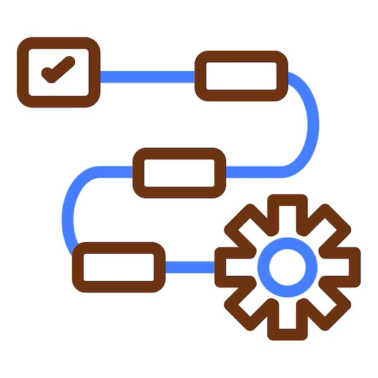

The project was carried out using the ArCo Knowledge Graph, accessed through the official ArCo SPARQL Endpoint. The endpoint was used as the main interface for querying and exploring RDF data describing cultural heritage resources.
The ArCo SPARQL Endpoint was used to execute SPARQL SELECT queries in order to inspect the structure of the RDF graph and understand how cultural heritage information is represented.
This step supported the analysis of existing entities, relationships, and metadata available within the dataset.
Information used in the modelling process was collected and processed using a combination of computational and manual approaches. Large Language Models (LLMs), specifically ChatGPT and Gemini, were employed to assist in structuring and organising textual information.
The following prompting strategies were applied:
The outputs generated by the LLMs were treated as auxiliary material and were systematically validated using authoritative and institutional sources before being considered for integration.
The final semantic representation was designed using RDF following Linked Open Data principles. The ArCo ontology
(a-cd) was used to model entities and contextual relationships in a structured and interoperable way.
SPARQL was used as the primary query language for interacting with the ArCo Knowledge Graph. The workflow included:
The final phase involved the creation of RDF triples representing the modelled information. These triples were designed according to the ArCo ontology and encoded using standard RDF syntax.
The resulting dataset extends the semantic representation of the knowledge graph while preserving full compatibility with the existing Linked Open Data structure.
